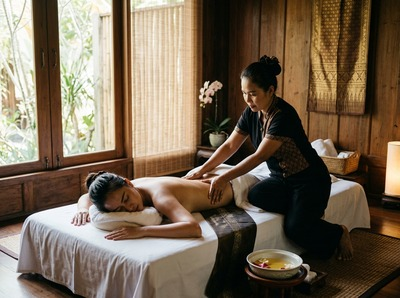

★★★★★ Quality gate failures: readability. Review and edit before removing this notice. ★★★★★
Whether you have strained a muscle, torn a ligament, or are working through the aftermath of a sports injury, the road back to full function can feel frustratingly slow.
Injury rehabilitation is not simply about waiting for the pain to go. It is about actively supporting your body through each stage of healing. The goal is to return to full strength, not limp back to a fraction of what you were before.
Massage therapy plays a well-documented role in that process. At Glasgow Thai Massage, we see the results of it regularly.
Sports and musculoskeletal injuries include sprains, strains, muscle tears, and soft tissue damage. They happen when force, repeated strain, or sudden impact disrupts the normal structure of muscles, tendons, or ligaments. The body responds with swelling, inflammation, and pain. These are natural defences.

Without proper care, these responses can lead to stiffness, scar tissue, and reduced movement. That damage can linger long after the original injury has healed.
Rehabilitation is the structured process of restoring strength, mobility, and function. It moves through several phases: reducing inflammation, rebuilding tissue, restoring range of motion, and returning to full activity. Skipping or rushing one phase often undermines the next.
Massage tackles several of the key barriers that slow recovery. One of the most immediate effects is better circulation. When soft tissue is worked, blood flow to the injured area increases. This brings oxygen and nutrients that damaged tissue needs to repair.
This matters most in the mid-stages of recovery, when swelling has settled but tissue is still rebuilding. NHS guidance on sprains and strains highlights that restoring movement and reducing stiffness are central recovery goals. Targeted massage supports both directly.
Scar tissue is another major concern. As soft tissue heals, the body lays down collagen in a disorganised pattern. Left alone, this creates adhesions that limit movement and cause pain long after the injury has healed.
Deep tissue work helps break down and realign that collagen. This reduces restriction and improves tissue quality. A review on PubMed examining massage and scar outcomes found clear improvements in scar formation, pain, and related anxiety in patients receiving regular massage.
At Glasgow Thai Massage, Thai sports massage combines deep tissue techniques with targeted soft tissue work. It is one of the most effective options for people in active rehabilitation.
For those whose injury has left wider tension across surrounding muscle groups, traditional Thai massage uses assisted stretching and acupressure along the body's sen energy lines. This restores mobility and eases the tension that builds when the body guards an injured area.
Book your session today and start supporting your recovery properly.
A rehabilitation session begins with a conversation about your injury. How it happened, where you are in recovery, and what your current limits are. Maliwan trained at the Wat Pho Thai Massage School in Bangkok and brings over 20 years of practice. She tailors every session to your needs.
She will not work against your recovery. She will work with it, using the right pressure and technique for your stage of healing. In the earlier stages, the focus is on easing tension in surrounding muscles and improving circulation to the injured area.
As you progress, sessions shift toward restoring full range of motion and addressing scar tissue and adhesions. You can book your rehabilitation session online at our studio on West Nile Street in Glasgow city centre.
Rehabilitation massage is most valuable for runners, cyclists, and gym regulars recovering from soft tissue injuries. It also helps office workers managing repeated strain in the neck, shoulders, or wrists. People recovering from ankle sprains, knee injuries, or muscle tears in recreational sport benefit too.
So does anyone discharged from physiotherapy who still has residual tightness or restricted movement. If you have recovered but not fully regained your pre-injury range of motion, get in touch to book your appointment — it is the right next step.
The timing depends on the type and severity of your injury. During the acute phase — typically the first 48 to 72 hours — massage directly over the injured site is not appropriate. However, gentle work on surrounding muscles can begin earlier than most people realise.
Once acute inflammation has settled, targeted massage becomes not only safe but actively helpful. If you are unsure, let your therapist know the details of your injury and they will advise you.
Massage and physiotherapy work together rather than against each other. Physiotherapy focuses on exercise-based rehabilitation and restoring functional movement patterns. Massage addresses soft tissue tension, circulation, and scar tissue.
For many injuries, the most effective recovery involves both. If you have finished a course of physiotherapy but still feel restricted or tight, massage is an excellent next step.
Most people notice a real improvement in mobility and pain after two or three sessions. This varies depending on the nature and age of the injury. Recent injuries tend to respond faster than older, chronic ones.
Your therapist will be honest about what to expect based on your situation. They will also adjust their approach session by session as your body responds.
Both have a role, and the right choice depends on your injury and stage of recovery. Thai sports massage combines deep tissue techniques with targeted soft tissue work. It is especially effective for musculoskeletal injuries and sports-related recovery.
Traditional Thai massage focuses on assisted stretching and acupressure. It is excellent for restoring mobility and easing the tension that builds in muscles around an injured area. Many clients benefit from a mix of both across their recovery.
Effective rehabilitation massage is not pain-free, but it should never be more than you can handle. Working through scar tissue and tight muscles can be uncomfortable. The pressure is always adjusted to your feedback and your stage of healing.
Your therapist manages the difference between useful discomfort and harmful pressure carefully. Most clients find that the relief after a session far outweighs any discomfort during it.
Yes, and this is one of the strongest reasons to continue massage beyond the initial recovery phase. Regular sessions help keep tissue pliable, catch areas of residual tension before they become a problem, and preserve the range of motion you have worked hard to restore.
Athletes and active people benefit most from treating massage as ongoing maintenance rather than a one-off response to injury. A monthly session does far more than a single visit after something goes wrong.